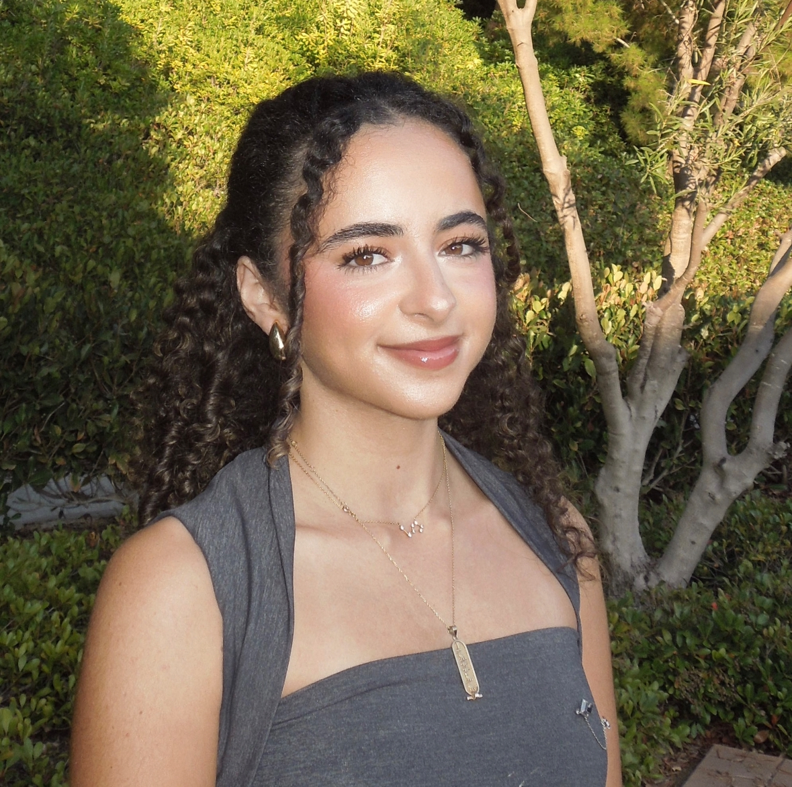

Computer Science · Builder · Creator
bassma :)
I'm a CS student at Cal State Fullerton, graduating December 2026. I build web and mobile apps — mostly with React, TypeScript, Python, and Firebase — and I care a lot about making things that actually feel good to use.
I also run a 400+ member organization at CSUF for women in business and STEM. It's taught me that shipping under pressure, coordinating across people, and caring about the end user matter just as much as the code itself.
Right now I'm working on Rey (an AI terminal companion for beginners) and Nanuk (a sustainability scanner with a polar bear). Both in progress. Both things I genuinely wanted to exist.
I'm open to internships, collaborations, and interesting conversations. If you have a project or opportunity, my inbox is open.